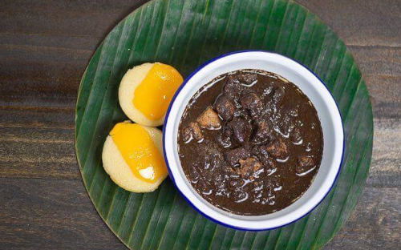

Home
Diniguan

Ingredients
-
1 lb pork cut into cubes
-
1 cup vinegar
-
2 pieces long green pepper
-
1 1/2 tablespoon brown sugar
-
1 piece onion chopped finely
-
1 tablespoon garlic minced
-
3 tablespoon cooking oil
-
1 cup water
-
10 oz pork blood
-
1 piece pork cube boullion
-
salt and pepper to taste
Instructions
-
Heat oil in a pan. Sauté garlic and onion.
-
Once the onion softens, add pork. Continue to sauté for 5 minutes or until light brown.
-
Pour water. Let boil.
-
Add pork cube. Cook in low heat until the meat tenderizes.
-
Add pork blood. Stir. Cook for 8 to 10 minutes while stirring.
-
Pour vinegar and add sugar and long green pepper. Cook for 12 to 15 minutes.
-
Season with salt and pepper as needed. Serve hot with puto.